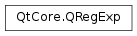

QRegExp¶
Synopsis¶
Functions¶
- def
__eq__(rx) - def
__ne__(rx) - def
__reduce__() - def
__repr__() - def
cap([nth=0]) - def
captureCount() - def
capturedTexts() - def
caseSensitivity() - def
errorString() - def
exactMatch(str) - def
indexIn(str[, offset=0[, caretMode=CaretAtZero]]) - def
isEmpty() - def
isMinimal() - def
isValid() - def
lastIndexIn(str[, offset=-1[, caretMode=CaretAtZero]]) - def
matchedLength() - def
pattern() - def
patternSyntax() - def
pos([nth=0]) - def
replace(sourceString, after) - def
setCaseSensitivity(cs) - def
setMinimal(minimal) - def
setPattern(pattern) - def
setPatternSyntax(syntax) - def
swap(other)
Detailed Description¶
The
PySide2.QtCore.QRegExpclass provides pattern matching using regular expressions.A regular expression, or “regexp”, is a pattern for matching substrings in a text. This is useful in many contexts, e.g.,
Validation A regexp can test whether a substring meets some criteria, e.g. is an integer or contains no whitespace. Searching A regexp provides more powerful pattern matching than simple substring matching, e.g., match one of the words mail , letter or correspondence , but none of the words email , mailman , mailer , letterbox , etc. Search and Replace A regexp can replace all occurrences of a substring with a different substring, e.g., replace all occurrences of & with & except where the & is already followed by an amp; . String Splitting A regexp can be used to identify where a string should be split apart, e.g. splitting tab-delimited strings. A brief introduction to regexps is presented, a description of Qt’s regexp language, some examples, and the function documentation itself.
PySide2.QtCore.QRegExpis modeled on Perl’s regexp language. It fully supports Unicode.PySide2.QtCore.QRegExpcan also be used in a simpler, wildcard mode that is similar to the functionality found in command shells. The syntax rules used byPySide2.QtCore.QRegExpcan be changed withPySide2.QtCore.QRegExp.setPatternSyntax(). In particular, the pattern syntax can be set toQRegExp.FixedString, which means the pattern to be matched is interpreted as a plain string, i.e., special characters (e.g., backslash) are not escaped.A good text on regexps is Mastering Regular Expressions (Third Edition) by Jeffrey E. F. Friedl, ISBN 0-596-52812-4.
Note
In Qt 5, the new
PySide2.QtCore.QRegularExpressionclass provides a Perl compatible implementation of regular expressions and is recommended in place ofPySide2.QtCore.QRegExp.
Introduction¶
Regexps are built up from expressions, quantifiers, and assertions. The simplest expression is a character, e.g. x or 5 . An expression can also be a set of characters enclosed in square brackets. [ABCD] will match an A or a B or a C or a D . We can write this same expression as [A-D] , and an expression to match any capital letter in the English alphabet is written as [A-Z] .
A quantifier specifies the number of occurrences of an expression that must be matched. x{1,1} means match one and only one x . x{1,5} means match a sequence of x characters that contains at least one x but no more than five.
Note that in general regexps cannot be used to check for balanced brackets or tags. For example, a regexp can be written to match an opening html
<b>and its closing</b>, if the<b>tags are not nested, but if the<b>tags are nested, that same regexp will match an opening<b>tag with the wrong closing</b>. For the fragment<b>bold <b>bolder</b></b>, the first<b>would be matched with the first</b>, which is not correct. However, it is possible to write a regexp that will match nested brackets or tags correctly, but only if the number of nesting levels is fixed and known. If the number of nesting levels is not fixed and known, it is impossible to write a regexp that will not fail.Suppose we want a regexp to match integers in the range 0 to 99. At least one digit is required, so we start with the expression [0-9]{1,1} , which matches a single digit exactly once. This regexp matches integers in the range 0 to 9. To match integers up to 99, increase the maximum number of occurrences to 2, so the regexp becomes [0-9]{1,2} . This regexp satisfies the original requirement to match integers from 0 to 99, but it will also match integers that occur in the middle of strings. If we want the matched integer to be the whole string, we must use the anchor assertions, ^ (caret) and $ (dollar). When ^ is the first character in a regexp, it means the regexp must match from the beginning of the string. When $ is the last character of the regexp, it means the regexp must match to the end of the string. The regexp becomes ^[0-9]{1,2}$ . Note that assertions, e.g. ^ and $ , do not match characters but locations in the string.
If you have seen regexps described elsewhere, they may have looked different from the ones shown here. This is because some sets of characters and some quantifiers are so common that they have been given special symbols to represent them. [0-9] can be replaced with the symbol \d . The quantifier to match exactly one occurrence, {1,1} , can be replaced with the expression itself, i.e. x{1,1} is the same as x . So our 0 to 99 matcher could be written as ^\d{1,2}$ . It can also be written ^\d\d{0,1}$ , i.e. From the start of the string, match a digit, followed immediately by 0 or 1 digits . In practice, it would be written as ^\d\d?$ . The ? is shorthand for the quantifier {0,1} , i.e. 0 or 1 occurrences. ? makes an expression optional. The regexp ^\d\d?$ means From the beginning of the string, match one digit, followed immediately by 0 or 1 more digit, followed immediately by end of string .
To write a regexp that matches one of the words ‘mail’ or ‘letter’ or ‘correspondence’ but does not match words that contain these words, e.g., ‘email’, ‘mailman’, ‘mailer’, and ‘letterbox’, start with a regexp that matches ‘mail’. Expressed fully, the regexp is m{1,1}a{1,1}i{1,1}l{1,1} , but because a character expression is automatically quantified by {1,1} , we can simplify the regexp to mail , i.e., an ‘m’ followed by an ‘a’ followed by an ‘i’ followed by an ‘l’. Now we can use the vertical bar | , which means or , to include the other two words, so our regexp for matching any of the three words becomes mail|letter|correspondence . Match ‘mail’ or ‘letter’ or ‘correspondence’. While this regexp will match one of the three words we want to match, it will also match words we don’t want to match, e.g., ‘email’. To prevent the regexp from matching unwanted words, we must tell it to begin and end the match at word boundaries. First we enclose our regexp in parentheses, (mail|letter|correspondence) . Parentheses group expressions together, and they identify a part of the regexp that we wish to
capture. Enclosing the expression in parentheses allows us to use it as a component in more complex regexps. It also allows us to examine which of the three words was actually matched. To force the match to begin and end on word boundaries, we enclose the regexp in \b word boundary assertions: \b(mail|letter|correspondence)\b . Now the regexp means: Match a word boundary, followed by the regexp in parentheses, followed by a word boundary . The \b assertion matches a position in the regexp, not a character . A word boundary is any non-word character, e.g., a space, newline, or the beginning or ending of a string.If we want to replace ampersand characters with the HTML entity & , the regexp to match is simply & . But this regexp will also match ampersands that have already been converted to HTML entities. We want to replace only ampersands that are not already followed by amp; . For this, we need the negative lookahead assertion, (?! __**)** . The regexp can then be written as &(?!amp;) , i.e. Match an ampersand that is not followed by amp; .
If we want to count all the occurrences of ‘Eric’ and ‘Eirik’ in a string, two valid solutions are \b(Eric|Eirik)\b and \bEi?ri[ck]\b . The word boundary assertion ‘\b’ is required to avoid matching words that contain either name, e.g. ‘Ericsson’. Note that the second regexp matches more spellings than we want: ‘Eric’, ‘Erik’, ‘Eiric’ and ‘Eirik’.
Some of the examples discussed above are implemented in the
code examplessection.
Characters and Abbreviations for Sets of Characters¶
Element Meaning c A character represents itself unless it has a special regexp meaning. e.g. c matches the character c . \c A character that follows a backslash matches the character itself, except as specified below. e.g., To match a literal caret at the beginning of a string, write \^ . \a Matches the ASCII bell (BEL, 0x07). \f Matches the ASCII form feed (FF, 0x0C). \n Matches the ASCII line feed (LF, 0x0A, Unix newline). \r Matches the ASCII carriage return (CR, 0x0D). \t Matches the ASCII horizontal tab (HT, 0x09). \v Matches the ASCII vertical tab (VT, 0x0B). \x*hhhh* Matches the Unicode character corresponding to the hexadecimal number hhhh (between 0x0000 and 0xFFFF). \0*ooo* (i.e., \zero ooo ) matches the ASCII/Latin1 character for the octal number ooo (between 0 and 0377). . (dot) Matches any character (including newline). \d Matches a digit ( QChar.isDigit()).\D Matches a non-digit. \s Matches a whitespace character ( QChar.isSpace()).\S Matches a non-whitespace character. \w Matches a word character ( QChar.isLetterOrNumber(),QChar.isMark(), or ‘_’).\W Matches a non-word character. \*n* The n -th backreference, e.g. \1, \2, etc. Note
The C++ compiler transforms backslashes in strings. To include a \ in a regexp, enter it twice, i.e.
\\. To match the backslash character itself, enter it four times, i.e.\\\\.
Sets of Characters¶
Square brackets mean match any character contained in the square brackets. The character set abbreviations described above can appear in a character set in square brackets. Except for the character set abbreviations and the following two exceptions, characters do not have special meanings in square brackets.
^ The caret negates the character set if it occurs as the first character (i.e. immediately after the opening square bracket). [abc] matches ‘a’ or ‘b’ or ‘c’, but [^abc] matches anything but ‘a’ or ‘b’ or ‘c’. - The dash indicates a range of characters. [W-Z] matches ‘W’ or ‘X’ or ‘Y’ or ‘Z’. Using the predefined character set abbreviations is more portable than using character ranges across platforms and languages. For example, [0-9] matches a digit in Western alphabets but \d matches a digit in any alphabet.
Note: In other regexp documentation, sets of characters are often called “character classes”.
Quantifiers¶
By default, an expression is automatically quantified by {1,1} , i.e. it should occur exactly once. In the following list, *E* stands for expression. An expression is a character, or an abbreviation for a set of characters, or a set of characters in square brackets, or an expression in parentheses.
*E*? Matches zero or one occurrences of E . This quantifier means The previous expression is optional , because it will match whether or not the expression is found. *E*? is the same as *E*{0,1} . e.g., dents? matches ‘dent’ or ‘dents’. *E*+ Matches one or more occurrences of E . *E*+ is the same as *E*{1,} . e.g., 0+ matches ‘0’, ‘00’, ‘000’, etc. *E** Matches zero or more occurrences of E . It is the same as *E*{0,} . The * quantifier is often used in error where + should be used. For example, if \s*$ is used in an expression to match strings that end in whitespace, it will match every string because \s*$ means Match zero or more whitespaces followed by end of string . The correct regexp to match strings that have at least one trailing whitespace character is \s+$ . *E*{n} Matches exactly n occurrences of E . *E*{n} is the same as repeating E n times. For example, x{5} is the same as xxxxx . It is also the same as *E*{n,n} , e.g. x{5,5} . *E*{n,} Matches at least n occurrences of E . *E*{,m} Matches at most m occurrences of E . *E*{,m} is the same as *E*{0,m} . *E*{n,m} Matches at least n and at most m occurrences of E . To apply a quantifier to more than just the preceding character, use parentheses to group characters together in an expression. For example, tag+ matches a ‘t’ followed by an ‘a’ followed by at least one ‘g’, whereas (tag)+ matches at least one occurrence of ‘tag’.
Note: Quantifiers are normally “greedy”. They always match as much text as they can. For example, 0+ matches the first zero it finds and all the consecutive zeros after the first zero. Applied to ‘20005’, it matches ‘2*000* 5’. Quantifiers can be made non-greedy, see
PySide2.QtCore.QRegExp.setMinimal().
Capturing Text¶
Parentheses allow us to group elements together so that we can quantify and capture them. For example if we have the expression mail|letter|correspondence that matches a string we know that one of the words matched but not which one. Using parentheses allows us to “capture” whatever is matched within their bounds, so if we used (mail|letter|correspondence) and matched this regexp against the string “I sent you some email” we can use the
PySide2.QtCore.QRegExp.cap()orPySide2.QtCore.QRegExp.capturedTexts()functions to extract the matched characters, in this case ‘mail’.We can use captured text within the regexp itself. To refer to the captured text we use backreferences which are indexed from 1, the same as for
PySide2.QtCore.QRegExp.cap(). For example we could search for duplicate words in a string using \b(\w+)\W+\1\b which means match a word boundary followed by one or more word characters followed by one or more non-word characters followed by the same text as the first parenthesized expression followed by a word boundary.If we want to use parentheses purely for grouping and not for capturing we can use the non-capturing syntax, e.g. (?:green|blue) . Non-capturing parentheses begin ‘(?:’ and end ‘)’. In this example we match either ‘green’ or ‘blue’ but we do not capture the match so we only know whether or not we matched but not which color we actually found. Using non-capturing parentheses is more efficient than using capturing parentheses since the regexp engine has to do less book-keeping.
Both capturing and non-capturing parentheses may be nested.
For historical reasons, quantifiers (e.g. * ) that apply to capturing parentheses are more “greedy” than other quantifiers. For example, a*(a*) will match “aaa” with cap(1) == “aaa”. This behavior is different from what other regexp engines do (notably, Perl). To obtain a more intuitive capturing behavior, specify
QRegExp.RegExp2to thePySide2.QtCore.QRegExpconstructor or callPySide2.QtCore.QRegExp.setPatternSyntax()(QRegExp.RegExp2).When the number of matches cannot be determined in advance, a common idiom is to use
PySide2.QtCore.QRegExp.cap()in a loop. For example:rx = QRegExp("(\\d+)") txt = "Offsets: 12 14 99 231 7" lst = [] pos = rx.indexIn(txt, 0) while pos != -1: lst.append(rx.cap(1)) pos += rx.matchedLength() pos = rx.indexIn(txt, pos) # lst: ["12", "14", "99", "231", "7"]
Assertions¶
Assertions make some statement about the text at the point where they occur in the regexp but they do not match any characters. In the following list *E* stands for any expression.
^ The caret signifies the beginning of the string. If you wish to match a literal ^you must escape it by writing\\^. For example, ^#include will only match strings which begin with the characters ‘#include’. (When the caret is the first character of a character set it has a special meaning, seeSets of Characters.)$ The dollar signifies the end of the string. For example \d\s*$ will match strings which end with a digit optionally followed by whitespace. If you wish to match a literal $you must escape it by writing\\$.\b A word boundary. For example the regexp \bOK\b means match immediately after a word boundary (e.g. start of string or whitespace) the letter ‘O’ then the letter ‘K’ immediately before another word boundary (e.g. end of string or whitespace). But note that the assertion does not actually match any whitespace so if we write (\bOK\b) and we have a match it will only contain ‘OK’ even if the string is “It’s OK now”. \B A non-word boundary. This assertion is true wherever \b is false. For example if we searched for \Bon\B in “Left on” the match would fail (space and end of string aren’t non-word boundaries), but it would match in “t*on* ne”. (?=*E*) Positive lookahead. This assertion is true if the expression matches at this point in the regexp. For example, const(?=\s+char) matches ‘const’ whenever it is followed by ‘char’, as in ‘static const char *’. (Compare with const\s+char , which matches ‘static const char *’.) (?!*E*) Negative lookahead. This assertion is true if the expression does not match at this point in the regexp. For example, const(?!\s+char) matches ‘const’ except when it is followed by ‘char’.
Wildcard Matching¶
Most command shells such as bash or cmd.exe support “file globbing”, the ability to identify a group of files by using wildcards. The
PySide2.QtCore.QRegExp.setPatternSyntax()function is used to switch between regexp and wildcard mode. Wildcard matching is much simpler than full regexps and has only four features:
c Any character represents itself apart from those mentioned below. Thus c matches the character c . ? Matches any single character. It is the same as . in full regexps. * Matches zero or more of any characters. It is the same as .* in full regexps. […] Sets of characters can be represented in square brackets, similar to full regexps. Within the character class, like outside, backslash has no special meaning. In the mode Wildcard, the wildcard characters cannot be escaped. In the mode
WildcardUnix, the character ‘' escapes the wildcard.For example if we are in wildcard mode and have strings which contain filenames we could identify HTML files with *.html . This will match zero or more characters followed by a dot followed by ‘h’, ‘t’, ‘m’ and ‘l’.
To test a string against a wildcard expression, use
PySide2.QtCore.QRegExp.exactMatch(). For example:rx = QRegExp("*.txt") rx.setPatternSyntax(QRegExp.Wildcard) rx.exactMatch("README.txt") # returns True rx.exactMatch("welcome.txt.bak") # returns False
Notes for Perl Users¶
Most of the character class abbreviations supported by Perl are supported by
PySide2.QtCore.QRegExp, seecharacters and abbreviations for sets of characters.In
PySide2.QtCore.QRegExp, apart from within character classes,^always signifies the start of the string, so carets must always be escaped unless used for that purpose. In Perl the meaning of caret varies automagically depending on where it occurs so escaping it is rarely necessary. The same applies to$which inPySide2.QtCore.QRegExpalways signifies the end of the string.
PySide2.QtCore.QRegExp‘s quantifiers are the same as Perl’s greedy quantifiers (but see thenote above). Non-greedy matching cannot be applied to individual quantifiers, but can be applied to all the quantifiers in the pattern. For example, to match the Perl regexp ro+?m requires:rx = QRegExp("ro+m") rx.setMinimal(True)The equivalent of Perl’s
/ioption isPySide2.QtCore.QRegExp.setCaseSensitivity()(Qt.CaseInsensitive).Perl’s
/goption can be emulated using aloop.In
PySide2.QtCore.QRegExp. matches any character, therefore allPySide2.QtCore.QRegExpregexps have the equivalent of Perl’s/soption.PySide2.QtCore.QRegExpdoes not have an equivalent to Perl’s/moption, but this can be emulated in various ways for example by splitting the input into lines or by looping with a regexp that searches for newlines.Because
PySide2.QtCore.QRegExpis string oriented, there are no \A, \Z, or \z assertions. The \G assertion is not supported but can be emulated in a loop.Perl’s $& is cap(0) or
PySide2.QtCore.QRegExp.capturedTexts()[0]. There are noPySide2.QtCore.QRegExpequivalents for $`, $’ or $+. Perl’s capturing variables, $1, $2, … correspond to cap(1) orPySide2.QtCore.QRegExp.capturedTexts()[1], cap(2) orPySide2.QtCore.QRegExp.capturedTexts()[2], etc.To substitute a pattern use
QString.replace().Perl’s extended
/xsyntax is not supported, nor are directives, e.g. (?i), or regexp comments, e.g. (?#comment). On the other hand, C++’s rules for literal strings can be used to achieve the same:mark = QRegExp("\\b" # word boundary "[Mm]ark" # the word we want to match )Both zero-width positive and zero-width negative lookahead assertions (?=pattern) and (?!pattern) are supported with the same syntax as Perl. Perl’s lookbehind assertions, “independent” subexpressions and conditional expressions are not supported.
Non-capturing parentheses are also supported, with the same (?:pattern) syntax.
See
QString.split()andQStringList.join()for equivalents to Perl’s split and join functions.Note: because C++ transforms 's they must be written twice in code, e.g. \b must be written \b .
Code Examples¶
rx = QRegExp("^\\d\\d?$") # match integers 0 to 99 rx.indexIn("123") # returns -1 (no match) rx.indexIn("-6") # returns -1 (no match) rx.indexIn("6") # returns 0 (matched as position 0)The third string matches ‘6 ‘. This is a simple validation regexp for integers in the range 0 to 99.
rx = QRegExp("^\\S+$") # match strings without whitespace rx.indexIn("Hello world") # returns -1 (no match) rx.indexIn("This_is-OK") # returns 0 (matched at position 0)The second string matches ‘This_is-OK ‘. We’ve used the character set abbreviation ‘\S’ (non-whitespace) and the anchors to match strings which contain no whitespace.
In the following example we match strings containing ‘mail’ or ‘letter’ or ‘correspondence’ but only match whole words i.e. not ‘email’
rx = QRegExp("\\b(mail|letter|correspondence)\\b") rx.indexIn("I sent you an email") # returns -1 (no match) rx.indexIn("Please write the letter") # returns 17The second string matches “Please write the letter “. The word ‘letter’ is also captured (because of the parentheses). We can see what text we’ve captured like this:
captured = rx.cap(1) # captured == "letter"This will capture the text from the first set of capturing parentheses (counting capturing left parentheses from left to right). The parentheses are counted from 1 since cap(0) is the whole matched regexp (equivalent to ‘&’ in most regexp engines).
rx = QRegExp("&(?!amp;)") # match ampersands but not & line1 = QString("This & that") line1.replace(rx, "&") # line1 == "This & that" line2 = QString("His & hers & theirs") line2.replace(rx, "&") # line2 == "His & hers & theirs"Here we’ve passed the
PySide2.QtCore.QRegExptoPySide2.QtCore.QString‘s replace() function to replace the matched text with new text.txt = QString("One Eric another Eirik, and an Ericsson. How many Eiriks, Eric?") rx = QRegExp("\\b(Eric|Eirik)\\b") # match Eric or Eirik pos = 0 # where we are in the string count = 0 # how many Eric and Eirik's we've counted while pos >= 0: pos = rx.indexIn(txt, pos) if pos >= 0: pos += 1 # move along in str count += 1 # count our Eric or EirikWe’ve used the
PySide2.QtCore.QRegExp.indexIn()function to repeatedly match the regexp in the string. Note that instead of moving forward by one character at a timepos++we could have writtenpos += rx.matchedLength()to skip over the already matched string. The count will equal 3, matching ‘One Eric another Eirik , and an Ericsson. How many Eiriks, Eric ?’; it doesn’t match ‘Ericsson’ or ‘Eiriks’ because they are not bounded by non-word boundaries.One common use of regexps is to split lines of delimited data into their component fields.
txt = "The Qt Company Ltd\tqt.io\tFinland" rx.setPattern("^([^\t]+)\t([^\t]+)\t([^\t]+)$"); if rx.indexIn(txt) != -1: company = rx.cap(1) web = rx.cap(2) country = rx.cap(3)In this example our input lines have the format company name, web address and country. Unfortunately the regexp is rather long and not very versatile – the code will break if we add any more fields. A simpler and better solution is to look for the separator, ‘\t’ in this case, and take the surrounding text. The
QString.split()function can take a separator string or regexp as an argument and split a string accordingly.field = txt.split("\t")Here field[0] is the company, field[1] the web address and so on.
To imitate the matching of a shell we can use wildcard mode.
rx = QRegExp("*.html") rx.setPatternSyntax(QRegExp.Wildcard) rx.exactMatch("index.html") # returns True rx.exactMatch("default.htm") # returns False rx.exactMatch("readme.txt") # returns FalseWildcard matching can be convenient because of its simplicity, but any wildcard regexp can be defined using full regexps, e.g. .*.html$ . Notice that we can’t match both
.htmland.htmfiles with a wildcard unless we use *.htm* which will also match ‘test.html.bak’. A full regexp gives us the precision we need, .*.html?$ .
PySide2.QtCore.QRegExpcan match case insensitively usingPySide2.QtCore.QRegExp.setCaseSensitivity(), and can use non-greedy matching, seePySide2.QtCore.QRegExp.setMinimal(). By defaultPySide2.QtCore.QRegExpuses full regexps but this can be changed withPySide2.QtCore.QRegExp.setPatternSyntax(). Searching can be done forward withPySide2.QtCore.QRegExp.indexIn()or backward withPySide2.QtCore.QRegExp.lastIndexIn(). Captured text can be accessed usingPySide2.QtCore.QRegExp.capturedTexts()which returns a string list of all captured strings, or usingPySide2.QtCore.QRegExp.cap()which returns the captured string for the given index. ThePySide2.QtCore.QRegExp.pos()function takes a match index and returns the position in the string where the match was made (or -1 if there was no match).See also
PySide2.QtCore.QStringPySide2.QtCore.QStringListPySide2.QtGui.QRegExpValidatorPySide2.QtCore.QSortFilterProxyModelRegular Expression Example
-
class
PySide2.QtCore.QRegExp¶ -
class
PySide2.QtCore.QRegExp(rx) -
class
PySide2.QtCore.QRegExp(pattern[, cs=Qt.CaseSensitive[, syntax=RegExp]]) Parameters: - cs –
PySide2.QtCore.Qt.CaseSensitivity - syntax –
PySide2.QtCore.QRegExp.PatternSyntax - rx –
PySide2.QtCore.QRegExp - pattern – unicode
Constructs an empty regexp.
Constructs a regular expression as a copy of
rx.See also
PySide2.QtCore.QRegExp.operator=()Constructs a regular expression object for the given
patternstring. The pattern must be given using wildcard notation ifsyntaxisWildcard; the default isRegExp. The pattern is case sensitive, unlesscsisQt.CaseInsensitive. Matching is greedy (maximal), but can be changed by callingPySide2.QtCore.QRegExp.setMinimal().- cs –
-
PySide2.QtCore.QRegExp.PatternSyntax¶ The syntax used to interpret the meaning of the pattern.
Constant Description QRegExp.RegExp A rich Perl-like pattern matching syntax. This is the default. QRegExp.RegExp2 Like , but with greedy quantifiers. (Introduced in Qt 4.2.)QRegExp.Wildcard This provides a simple pattern matching syntax similar to that used by shells (command interpreters) for “file globbing”. See QRegExp wildcard matching.QRegExp.WildcardUnix This is similar to Wildcard but with the behavior of a Unix shell. The wildcard characters can be escaped with the character “". QRegExp.FixedString The pattern is a fixed string. This is equivalent to using the pattern on a string in which all metacharacters are escaped using PySide2.QtCore.QRegExp.escape().QRegExp.W3CXmlSchema11 The pattern is a regular expression as defined by the W3C XML Schema 1.1 specification.
-
PySide2.QtCore.QRegExp.CaretMode¶ The enum defines the different meanings of the caret (^ ) in a regular expression. The possible values are:
Constant Description QRegExp.CaretAtZero The caret corresponds to index 0 in the searched string. QRegExp.CaretAtOffset The caret corresponds to the start offset of the search. QRegExp.CaretWontMatch The caret never matches.
-
PySide2.QtCore.QRegExp.__reduce__()¶ Return type: PyObject
-
PySide2.QtCore.QRegExp.__repr__()¶ Return type: PyObject
-
PySide2.QtCore.QRegExp.cap([nth=0])¶ Parameters: nth – PySide2.QtCore.intReturn type: unicode Returns the text captured by the
nthsubexpression. The entire match has index 0 and the parenthesized subexpressions have indexes starting from 1 (excluding non-capturing parentheses).rxlen = QRegExp("(\\d+)(?:\\s*)(cm|inch)") pos = rxlen.indexIn("Length: 189cm") if pos > -1: value = rxlen.cap(1) # "189" unit = rxlen.cap(2) # "cm"
The order of elements matched by is as follows. The first element, cap(0), is the entire matching string. Each subsequent element corresponds to the next capturing open left parentheses. Thus cap(1) is the text of the first capturing parentheses, cap(2) is the text of the second, and so on.
-
PySide2.QtCore.QRegExp.captureCount()¶ Return type: PySide2.QtCore.intReturns the number of captures contained in the regular expression.
-
PySide2.QtCore.QRegExp.capturedTexts()¶ Return type: list of strings Returns a list of the captured text strings.
The first string in the list is the entire matched string. Each subsequent list element contains a string that matched a (capturing) subexpression of the regexp.
For example:
rx = QRegExp("(\\d+)(\\s*)(cm|inch(es)?)") pos = rx.indexIn("Length: 36 inches") lst = rx.capturedTexts() # lst is now ("36 inches", "36", " ", "inches", "es")
The above example also captures elements that may be present but which we have no interest in. This problem can be solved by using non-capturing parentheses:
rx = QRegExp("(\\d+)(?:\\s*)(cm|inch(?:es)?)") pos = rx.indexIn("Length: 36 inches") lst = rx.capturedTexts() # lst is now ("36 inches", "36", "inches")
Note that if you want to iterate over the list, you should iterate over a copy, e.g.
for a in rx.capturedTexts(): myProcessing(a)
Some regexps can match an indeterminate number of times. For example if the input string is “Offsets: 12 14 99 231 7” and the regexp,
rx, is (\d+)+ , we would hope to get a list of all the numbers matched. However, after callingrx.indexIn(str), will return the list (“12”, “12”), i.e. the entire match was “12” and the first subexpression matched was “12”. The correct approach is to usePySide2.QtCore.QRegExp.cap()in aloop.The order of elements in the string list is as follows. The first element is the entire matching string. Each subsequent element corresponds to the next capturing open left parentheses. Thus [1] is the text of the first capturing parentheses, [2] is the text of the second and so on (corresponding to $1, $2, etc., in some other regexp languages).
-
PySide2.QtCore.QRegExp.caseSensitivity()¶ Return type: PySide2.QtCore.Qt.CaseSensitivityReturns
Qt.CaseSensitiveif the regexp is matched case sensitively; otherwise returnsQt.CaseInsensitive.
-
PySide2.QtCore.QRegExp.errorString()¶ Return type: unicode Returns a text string that explains why a regexp pattern is invalid the case being; otherwise returns “no error occurred”.
See also
-
static
PySide2.QtCore.QRegExp.escape(str)¶ Parameters: str – unicode Return type: unicode Returns the string
strwith every regexp special character escaped with a backslash. The special characters are $, (,), *, +, ., ?, [, ,], ^, {, | and }.Example:
s1 = QRegExp.escape("bingo") # s1 == "bingo" s2 = QRegExp.escape("f(x)") # s2 == "f\\(x\\)"
This function is useful to construct regexp patterns dynamically:
rx = QRegExp("(" + QRegExp.escape(name) + "|" + QRegExp.escape(alias) + ")")
-
PySide2.QtCore.QRegExp.exactMatch(str)¶ Parameters: str – unicode Return type: PySide2.QtCore.boolReturns
trueifstris matched exactly by this regular expression; otherwise returnsfalse. You can determine how much of the string was matched by callingPySide2.QtCore.QRegExp.matchedLength().For a given regexp string R, (“R”) is the equivalent of
PySide2.QtCore.QRegExp.indexIn()(“^R$”) since effectively encloses the regexp in the start of string and end of string anchors, except that it setsPySide2.QtCore.QRegExp.matchedLength()differently.For example, if the regular expression is blue , then returns
trueonly for inputblue. For inputsbluebell,blutakandlightblue, returnsfalseandPySide2.QtCore.QRegExp.matchedLength()will return 4, 3 and 0 respectively.Although const, this function sets
PySide2.QtCore.QRegExp.matchedLength(),PySide2.QtCore.QRegExp.capturedTexts(), andPySide2.QtCore.QRegExp.pos().
-
PySide2.QtCore.QRegExp.indexIn(str[, offset=0[, caretMode=CaretAtZero]])¶ Parameters: - str – unicode
- offset –
PySide2.QtCore.int - caretMode –
PySide2.QtCore.QRegExp.CaretMode
Return type: PySide2.QtCore.intAttempts to find a match in
strfrom positionoffset(0 by default). Ifoffsetis -1, the search starts at the last character; if -2, at the next to last character; etc.Returns the position of the first match, or -1 if there was no match.
The
caretModeparameter can be used to instruct whether ^ should match at index 0 or atoffset.You might prefer to use
QString.indexOf(),QString.contains(), or evenQStringList.filter(). To replace matches useQString.replace().Example:
txt = QString("offsets: 1.23 .50 71.00 6.00") rx = QRegExp("\\d*\\.\\d+") # primitive floating point matching count = 0 pos = rx.indexIn(txt, 0) while pos != -1: count += 1 pos += rx.matchedLength() pos = rx.indexIn(txt, pos) # pos will be 9, 14, 18 and finally 24; count will end up as 4
Although const, this function sets
PySide2.QtCore.QRegExp.matchedLength(),PySide2.QtCore.QRegExp.capturedTexts()andPySide2.QtCore.QRegExp.pos().If the
PySide2.QtCore.QRegExpis a wildcard expression (seePySide2.QtCore.QRegExp.setPatternSyntax()) and want to test a string against the whole wildcard expression, usePySide2.QtCore.QRegExp.exactMatch()instead of this function.
-
PySide2.QtCore.QRegExp.isEmpty()¶ Return type: PySide2.QtCore.boolReturns
trueif the pattern string is empty; otherwise returns false.If you call
PySide2.QtCore.QRegExp.exactMatch()with an empty pattern on an empty string it will return true; otherwise it returnsfalsesince it operates over the whole string. If you callPySide2.QtCore.QRegExp.indexIn()with an empty pattern on any string it will return the start offset (0 by default) because the empty pattern matches the ‘emptiness’ at the start of the string. In this case the length of the match returned byPySide2.QtCore.QRegExp.matchedLength()will be 0.See
QString.isEmpty().
-
PySide2.QtCore.QRegExp.isMinimal()¶ Return type: PySide2.QtCore.boolReturns
trueif minimal (non-greedy) matching is enabled; otherwise returnsfalse.
-
PySide2.QtCore.QRegExp.isValid()¶ Return type: PySide2.QtCore.boolReturns
trueif the regular expression is valid; otherwise returns false. An invalid regular expression never matches.The pattern [a-z is an example of an invalid pattern, since it lacks a closing square bracket.
Note that the validity of a regexp may also depend on the setting of the wildcard flag, for example *.html is a valid wildcard regexp but an invalid full regexp.
See also
-
PySide2.QtCore.QRegExp.lastIndexIn(str[, offset=-1[, caretMode=CaretAtZero]])¶ Parameters: - str – unicode
- offset –
PySide2.QtCore.int - caretMode –
PySide2.QtCore.QRegExp.CaretMode
Return type: PySide2.QtCore.intAttempts to find a match backwards in
strfrom positionoffset. Ifoffsetis -1 (the default), the search starts at the last character; if -2, at the next to last character; etc.Returns the position of the first match, or -1 if there was no match.
The
caretModeparameter can be used to instruct whether ^ should match at index 0 or atoffset.Although const, this function sets
PySide2.QtCore.QRegExp.matchedLength(),PySide2.QtCore.QRegExp.capturedTexts()andPySide2.QtCore.QRegExp.pos().Warning
Searching backwards is much slower than searching forwards.
-
PySide2.QtCore.QRegExp.matchedLength()¶ Return type: PySide2.QtCore.intReturns the length of the last matched string, or -1 if there was no match.
-
PySide2.QtCore.QRegExp.__ne__(rx)¶ Parameters: rx – PySide2.QtCore.QRegExpReturn type: PySide2.QtCore.boolReturns
trueif this regular expression is not equal torx; otherwise returnsfalse.See also
PySide2.QtCore.QRegExp.operator==()
-
PySide2.QtCore.QRegExp.__eq__(rx)¶ Parameters: rx – PySide2.QtCore.QRegExpReturn type: PySide2.QtCore.boolReturns
trueif this regular expression is equal torx; otherwise returnsfalse.Two
PySide2.QtCore.QRegExpobjects are equal if they have the same pattern strings and the same settings for case sensitivity, wildcard and minimal matching.
-
PySide2.QtCore.QRegExp.pattern()¶ Return type: unicode Returns the pattern string of the regular expression. The pattern has either regular expression syntax or wildcard syntax, depending on
PySide2.QtCore.QRegExp.patternSyntax().
-
PySide2.QtCore.QRegExp.patternSyntax()¶ Return type: PySide2.QtCore.QRegExp.PatternSyntaxReturns the syntax used by the regular expression. The default is
QRegExp.RegExp.
-
PySide2.QtCore.QRegExp.pos([nth=0])¶ Parameters: nth – PySide2.QtCore.intReturn type: PySide2.QtCore.intReturns the position of the
nthcaptured text in the searched string. Ifnthis 0 (the default), returns the position of the whole match.Example:
rx = QRegExp("/([a-z]+)/([a-z]+)") rx.indexIn("Output /dev/null") # returns 7 (position of /dev/null) rx.pos(0) # returns 7 (position of /dev/null) rx.pos(1) # returns 8 (position of dev) rx.pos(2) # returns 12 (position of null)
For zero-length matches, always returns -1. (For example, if cap(4) would return an empty string, pos(4) returns -1.) This is a feature of the implementation.
-
PySide2.QtCore.QRegExp.replace(sourceString, after)¶ Parameters: - sourceString – unicode
- after – unicode
Return type: unicode
- Replaces every occurrence of the regular expression in sourceString with after.
Returns a new Python string with the modified contents. For example:
s = "Banana" re = QRegExp("a[mn]") s = re.replace(s, "ox") # s == "Boxoxa"
For regular expressions containing capturing parentheses, occurrences of 1, 2, …, in after are replaced with rx.cap(1), cap(2), …
t = "A <i>bon mot</i>." re = QRegExp("<i>([^<]*)</i>") t = re.replace(t, "\\emph{\\1}") # t == "A \\emph{bon mot}."
-
PySide2.QtCore.QRegExp.setCaseSensitivity(cs)¶ Parameters: cs – PySide2.QtCore.Qt.CaseSensitivitySets case sensitive matching to
cs.If
csisQt.CaseSensitive, .txt$ matchesreadme.txtbut notREADME.TXT.
-
PySide2.QtCore.QRegExp.setMinimal(minimal)¶ Parameters: minimal – PySide2.QtCore.boolEnables or disables minimal matching. If
minimalis false, matching is greedy (maximal) which is the default.For example, suppose we have the input string “We must be <b>bold</b>, very <b>bold</b>!” and the pattern <b>.*</b> . With the default greedy (maximal) matching, the match is “We must be <b>bold</b>, very <b>bold</b> !”. But with minimal (non-greedy) matching, the first match is: “We must be <b>bold</b> , very <b>bold</b>!” and the second match is “We must be <b>bold</b>, very <b>bold</b> !”. In practice we might use the pattern <b>[^<]*</b> instead, although this will still fail for nested tags.
-
PySide2.QtCore.QRegExp.setPattern(pattern)¶ Parameters: pattern – unicode Sets the pattern string to
pattern. The case sensitivity, wildcard, and minimal matching options are not changed.
-
PySide2.QtCore.QRegExp.setPatternSyntax(syntax)¶ Parameters: syntax – PySide2.QtCore.QRegExp.PatternSyntaxSets the syntax mode for the regular expression. The default is
QRegExp.RegExp.Setting
syntaxtoQRegExp.Wildcardenables simple shell-likeQRegExp wildcard matching. For example, r*.txt matches the stringreadme.txtin wildcard mode, but does not matchreadme.Setting
syntaxtoQRegExp.FixedStringmeans that the pattern is interpreted as a plain string. Special characters (e.g., backslash) don’t need to be escaped then.
-
PySide2.QtCore.QRegExp.swap(other)¶ Parameters: other – PySide2.QtCore.QRegExpSwaps regular expression
otherwith this regular expression. This operation is very fast and never fails.
© 2018 The Qt Company Ltd. Documentation contributions included herein are the copyrights of their respective owners. The documentation provided herein is licensed under the terms of the GNU Free Documentation License version 1.3 as published by the Free Software Foundation. Qt and respective logos are trademarks of The Qt Company Ltd. in Finland and/or other countries worldwide. All other trademarks are property of their respective owners.